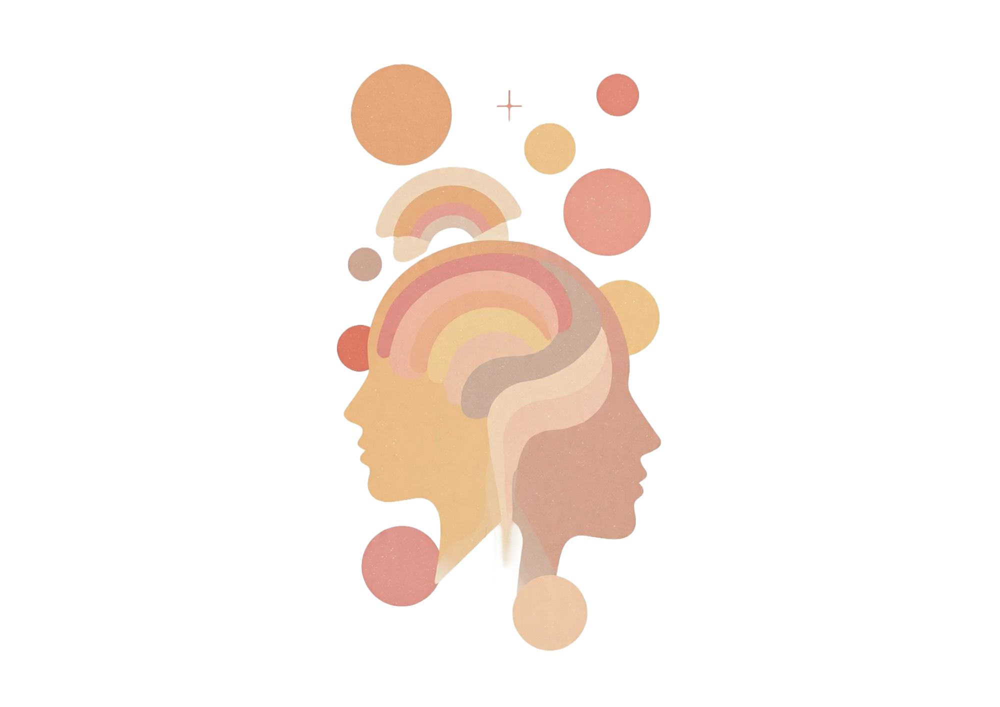

Empatizar
Comprendemos minuciosamente las necesidades de las necesidades, emociones y motivaciones del estudiante
En esta etapa se observa, escucha y analiza a las personas para comprender sus necesidades, emociones y dificultades antes de proponer una solución.
